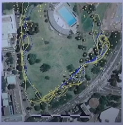
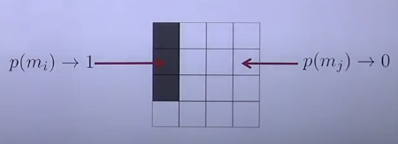

Occupancy Grid Maps store information about the environment regarding which parts of the map are occupied and which are free.
- Feature Map representations store where on the environment certain points or landmarks lay that the systems uses in order to estimate where it is.

- Volumetric maps are most typically used to store free space.
The goal to obtain a map of a given environment is to compute the most likely map given the sensor data:
\[ m^* = \arg \max_m P(m|u_1,z_1, \cdots, u_t,z_t) \]However, we will simplify this problem by assuming we already know the poses for certain, thus we swap the control commands \(u_t\) for poses \(x_t\):
\[ m^* = \arg \max_m P(m|x_1,z_1, \cdots, x_t,z_t) \]Grid Maps discretize the environment by dividing it into a finite number of cells, which encode information about its occupation. That is, a cell is either free or occupied.
Grids are rigid structures, where cells are distributed uniformly along the grid and represent a definite space.
Generally we describe cells as pixels.
- For each cell, the area corresponding to the cell are completely free or occupied.
- Every cell can be described with a binary random variable that models the occupancy:

- The world is static.
- The cells are independent of each other. Which means: if I know the occupancy state of a given cell, it does not help me estimate the occupancy state of another.
As we have said, each cell is a binary random variable that models the occupancy, that is:
- If we are certain a cell \(m_i\) is occupied: \(p(m_i) = 1\)
- If we are certain a cell \(m_i\) is free: \(p(m_i) = 0\)
- If we have no knowledge about the cell \(m_i\): \(p(m_i) = 0.5\)
The probability of a cell \(m_i\) being occupied is expressed as follows:
\[ P(M_i = occ) = P_{occ}(M_i) = p(m_i) \]The probability of it being free is given by:
\[ P(M_i = free) = P_{free}(M_i) = 1- P_{occ}(M_i) = p(\neg m_i) \]Also, the shading in the map tells us how certain we are about \(p(m_i)\), that is the more intense the shade the higher the probability.
The map is described by a probability distribution defined as the joint belief of each cell in the map:
\[ p(m) = p(m_1, m_2, \cdots, m_N) \]To simplify this distribution we exploit one of the assumptions made before, that said cells were independent of each other, thus:
\[ p(m) = \prod_i p(m_i) \]